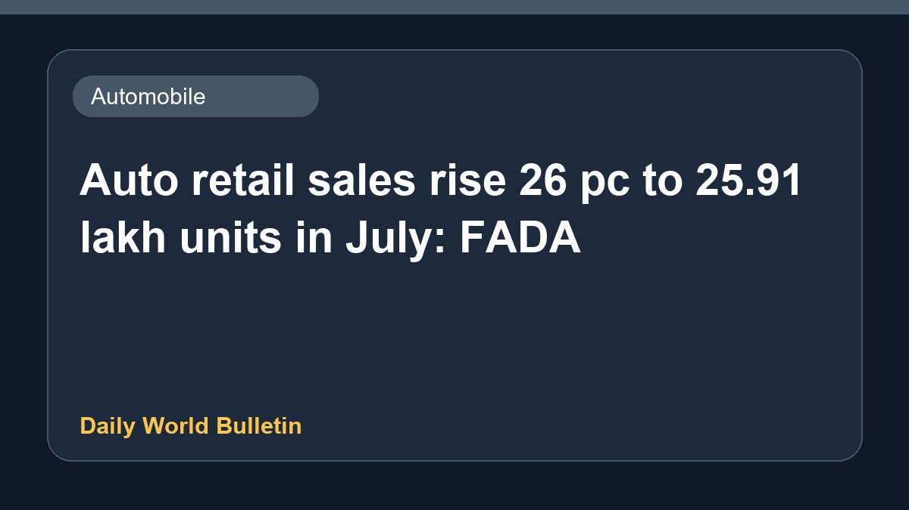

Auto retail sales rise 26 pc to 25.91 lakh units in July: FADA

According to the Federation of Automobile Dealers Associations, total retail sales in the Indian auto industry increased by 26 percent to reach 25,91,138 units in July. This growth reflects positive momentum across vehicle segments during the month. Industry experts noted that improved consumer demand and better vehicle availability contributed significantly to the higher sales figures reported by dealerships nationwide.
Original source: Automobile News Sources
Auto industry total retail sales up 26% at 25,91,138 units in July: FADA - Business Standard ↗
Auto industry total retail sales up 26% at 25,91,138 units in July: FADA - Business Standard ↗